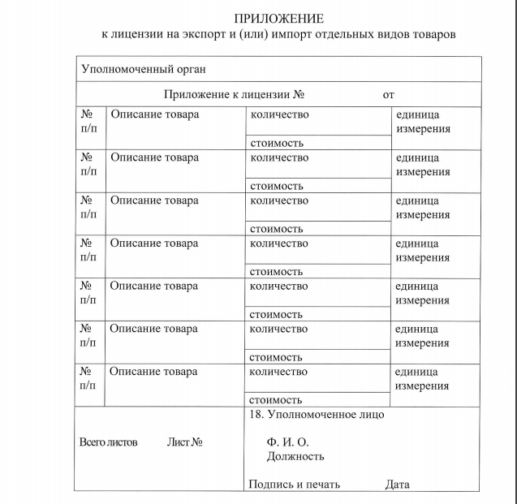
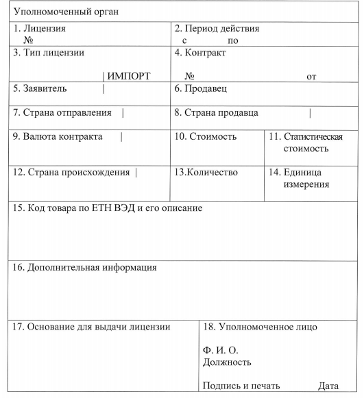
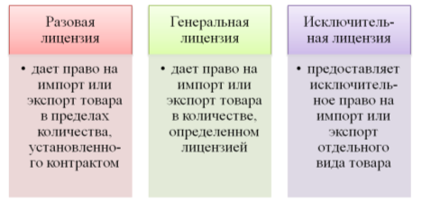

Назад
Одной из классификаций нетарифных мер зашиты внутреннего рынка являются количественные ограничения и сходные с ними административные меры, которые включают в себя квотирование, лицензирование, запреты, добровольные ограничения экспорта, различного рода валютные ограничения.
Лицензирование предусматривает выдачу государством-импортером или экспортером через специально уполномоченный государственный орган разрешения (лицензии) на ввоз или вывоз определенных перечисленных товаров в течение определенного периода времени. Лицензия также может установить порядок ввоза или вывоза товаров. Ниже представлены виды лицензий, а также форма лицензии и приложения к ней.
  
Лицензия не требуется при ввозе:
- наркотических лекарственных средств физическими лицами в ограниченных объемах ( наркотических средств не более объема недельной потребности; а психотропных средств и прекурсоров , в размере 90 разовых доз – при наличии подтверждающих медицинских документов или их копий, заверенных нотариусом или выдавшей медицинской организацией);
- наркотических лекарственных средств, предназначенных для оказания неотложной помощи при чрезвычайных ситуациях;
- наркотических лекарственных средств в аптечках первой помощи на транспортном средстве в ограниченном количестве, определенном законодательством государства регистрации таких транспортных средств.
С порядком заполнения заявления на получение лицензии и приложения к нему можно ознакомиться на сайте